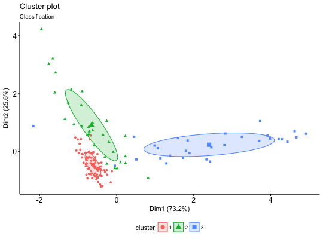

Plots the classification, the uncertainty and the BIC values returned by the Mclust() function.
fviz_mclust(object, what = c("classification", "uncertainty", "BIC"),
ellipse.type = "norm", ellipse.level = 0.4, ggtheme = theme_classic(),
...)
fviz_mclust_bic(object, model.names = NULL, shape = 19, color = "model",
palette = NULL, legend = NULL, main = "Model selection",
xlab = "Number of components", ylab = "BIC", ...)
Arguments
- object
- an object of class Mclust
- what
- choose from one of the following three options: "classification" (default), "uncertainty" and "BIC".
- ellipse.type
- Character specifying frame type. Possible
values are 'convex', 'confidence' or types supported by
stat_ellipse including one of c("t", "norm",
"euclid").
- ellipse.level
- the size of the concentration ellipse in
normal probability. Passed for
ggplot2::stat_ellipse 's level.
Ignored in 'convex'. Default value is 0.95.
- ggtheme
- function, ggplot2 theme name. Default value is theme_pubr().
Allowed values include ggplot2 official themes: theme_gray(), theme_bw(),
theme_minimal(), theme_classic(), theme_void(), ....
- ...
- other arguments to be passed to the functions fviz_cluster and ggpar.
- model.names
- one or more model names corresponding to models fit in object. The default
is to plot the BIC for all of the models fit.
- shape
- point shape. To change point shape by model names use shape = "model".
- color
- point and line color.
- palette
- the color palette to be used for coloring or filling by
groups. Allowed values include "grey" for grey color palettes; brewer
palettes e.g. "RdBu", "Blues", ...; or custom color palette e.g. c("blue",
"red"); and scientific journal palettes from ggsci R package, e.g.: "npg",
"aaas", "lancet", "jco", "ucscgb", "uchicago", "simpsons" and
"rickandmorty". Can be also a numeric vector of length(groups); in this
case a basic color palette is created using the function palette.
- legend
- character specifying legend position. Allowed values are one of
c("top", "bottom", "left", "right", "none"). To remove the legend use
legend = "none". Legend position can be also specified using a numeric
vector c(x, y); see details section.
- main
- plot main title.
- xlab
- character vector specifying x axis labels. Use xlab
= FALSE to hide xlab.
- ylab
- character vector specifying y axis labels. Use ylab = FALSE to
hide ylab.
Functions
-
fviz_mclust: Plots classification and uncertainty.
-
fviz_mclust_bic: Plots the BIC values.
Examples
if(require("mclust")){
# Compute model-based-clustering
require("mclust")
data("diabetes")
mc <- Mclust(diabetes[, -1])
# Visaulize BIC values
fviz_mclust_bic(mc)
# Visualize classification
fviz_mclust(mc, "classification", geom = "point")
}
#> Loading required package: mclust
#> __ ___________ __ _____________
#> / |/ / ____/ / / / / / ___/_ __/
#> / /|_/ / / / / / / / /\__ \ / /
#> / / / / /___/ /___/ /_/ /___/ // /
#> /_/ /_/\____/_____/\____//____//_/ version 5.2.2
#> Type 'citation("mclust")' for citing this R package in publications.
